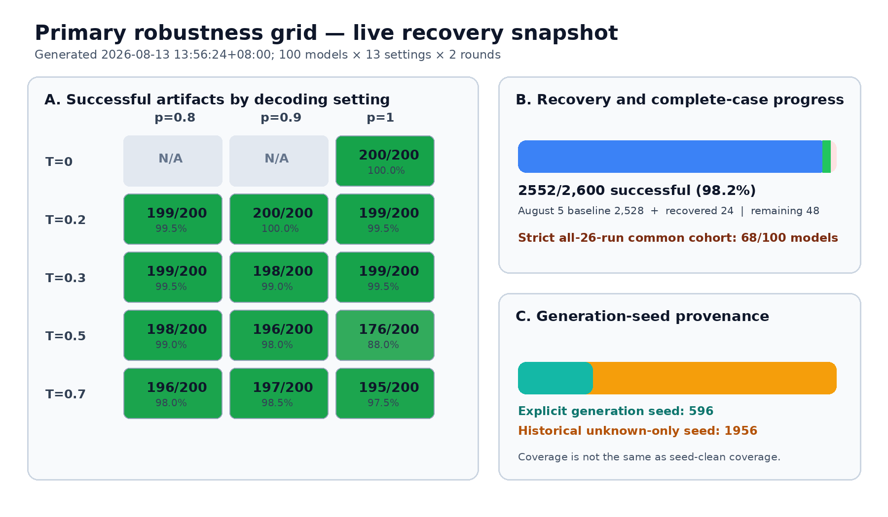
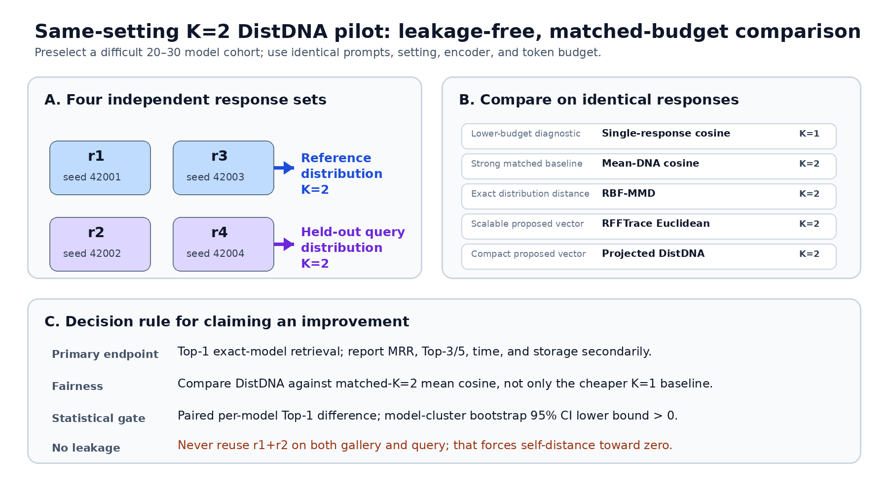

This note updates the 5 August report. It records only what changed during the week, what the current data can support, and the next experiment needed to test DistDNA fairly. The full experimental protocol and previously reported formulas remain in the earlier report and are not repeated here.
Recommended decision. First run a 10-model, one-setting, four-seed debugging pilot. Use it to validate the data split, implementation, and effect direction. Then start the 100-model extension at the same setting. Expand to all 12 stochastic settings only after the pilot is stable.
| Measure | 5 Aug frozen snapshot | 13 Aug live snapshot | Change |
|---|---|---|---|
| Successful artifacts | 2,528 / 2,600 | 2,552 / 2,600 | +24 |
| Artifact coverage | 97.2% | 98.2% | +1.0 pp |
| Slots without success | 72 | 48 | −24 |
| Strict all-26-run cohort | 59 / 100 | 68 / 100 | +9 models |
| Explicit-seed successes | 572 | 596 | +24 |
| Historical unknown-seed only | 1,956 | 1,956 | unchanged |

Figure 1. Live grid snapshot at 13:56 SGT on 13 August. Green recovery gains are real successful artifacts, but the seed-provenance panel shows why high coverage is not yet equivalent to a four-seed DistDNA dataset.
Interpretation. The recovery pass repairs the preregistered two-round grid. It should finish before a final primary-grid analysis is frozen. It does not, by itself, create four independent samples per model and setting.
The largest remaining gap is T=0.5, top-p=1.0 with 176/200 successful artifacts. All other stochastic settings are between 195/200 and 200/200. Failures are distributed across models, which is why the strict common cohort remains lower than the overall coverage percentage.
The response-generation seed and the DNA projection seed are different variables. This report concerns the response-generation seed. The projection seed remains fixed and does not create an independent response sample.
| Artifact source | Recorded generation seed | Use in current analysis | Use in four-seed DistDNA |
|---|---|---|---|
| Stochastic T=0.2, 0.3, 0.7 backfills | r1: 42001 r2: 42002 | Valid | Reusable as independent seeds |
| T=0.5 control and recovery | r1: 42 r2: 42 | Valid for coverage | Replace for seed-clean study |
| Historical sweep | Not recorded | Valid for matched method comparisons on the same responses | Replace; independence cannot be established |
| New four-seed extension | 42001, 42002, 42003, 42004 | Valid | Primary DistDNA evidence |
Across the 12 stochastic settings, the live repository contains 320 unique successful model–setting artifacts with explicit seed 42001 or 42002. A further 176 successful stochastic artifacts use seed 42 and are not counted as seed-clean four-seed evidence. The 100 deterministic artifacts are also excluded because repeated sampling is inactive at T=0.
Operational rule for the new queue: skip an artifact only when the same model, decoding setting, prompt set, token budget, and exact generation seed already have a successful output. Unknown-seed and seed-42 artifacts remain in the historical grid but do not satisfy a 42001–42004 slot.
The pilot asks one narrow question: when the generated-response budget is matched, does a distributional representation identify the model more reliably than averaging ordinary DNA vectors and using cosine retrieval?

Figure 2. Four independent response sets at one fixed decoding setting. Seeds 42001 and 42003 form the reference distribution; seeds 42002 and 42004 form the held-out query distribution. Every K=2 method reads the same four sets.
T=0.7, top-p=1.0. This is deliberately stochastic and therefore more likely to reveal whether distributional information helps. It also has broad explicit seed-42002 coverage in the current grid, reducing the amount of new generation needed for the later 100-model extension.
Two seeds are used to estimate the reference distribution and two different seeds estimate the query distribution. Reusing a response set on both sides would make a model artificially close to itself. Four seeds are therefore the minimum clean design for a K=2 versus K=2 same-setting comparison.
The 10-model run is a debugging and effect-direction pilot. It can reveal implementation errors, leakage, saturation, or an obviously unhelpful representation. It is not a final statistical claim: with ten queries, one corrected model changes Top-1 by ten percentage points. If the pipeline behaves sensibly, expand to 20–30 deliberately confusable models before interpreting confidence intervals.
All candidates below are already members of the fixed 100-model cohort and are advertised below 0.8B parameters. Selection is based on scale and family structure, not on DistDNA outcomes. The repeated Pythia and Qwen families intentionally make the retrieval task less likely to saturate.
| # | Model | Scale | Role in pilot |
|---|---|---|---|
| 1 | ibm-granite/granite-4.0-h-350m-base | ≈0.35B | Granite baseline |
| 2 | EleutherAI/pythia-410m-seed1 | ≈0.41B | Confusable same-family trio |
| 3 | EleutherAI/pythia-410m-seed2 | ≈0.41B | |
| 4 | EleutherAI/pythia-410m-seed3 | ≈0.41B | |
| 5 | unsloth/Qwen2.5-0.5B | ≈0.50B | Related Qwen variants |
| 6 | unsloth/Qwen2.5-0.5B-Instruct | ≈0.50B | |
| 7 | Ihor/Text2Graph-R1-Qwen2.5-0.5b | ≈0.50B | |
| 8 | robowaifudev/megatron-gpt2-345m | ≈0.35B | GPT-2 architecture |
| 9 | state-spaces/mamba-370m-hf | ≈0.37B | State-space architecture |
| 10 | unsloth/Qwen3-0.6B-Base | ≈0.60B | Newer Qwen family |
Pre-launch check. Parameter labels above are model-name/model-card scale labels. The runner should still validate configuration compatibility, non-empty generation, tokenizer access, and cached model availability before the four-seed queue starts.
| Decoding setting | T=0.7, top-p=1.0, sampling enabled |
| Seeds | 42001, 42002, 42003, 42004 |
| Prompts | The same 100 classical-Chinese prompts already used by the primary grid |
| Response budget | The same maximum generated-token limit as the primary grid |
| Representation | The same response encoder and projection configuration for every method |
| Output policy | Never overwrite historical artifacts; write to a seed-explicit extension directory |
| Method | Sample budget | Purpose | Interpretation |
|---|---|---|---|
| Single-response cosine | K=1 vs K=1 | Original low-budget diagnostic | Useful, but not the fairness gate |
| Mean-DNA cosine | K=2 vs K=2 | Strong matched-budget baseline | Primary comparator |
| Exact RBF-MMD | K=2 vs K=2 | Exact distribution distance | Accuracy reference for approximation |
| RFFTrace | K=2 vs K=2 | Scalable distributional vector | Primary DistDNA result |
| Compact DistDNA | K=2 vs K=2 | Projected representation | Accuracy–storage trade-off |
The decision rule is simple: for each held-out query distribution, rank the ten reference models by distance and check whether the true model is ranked first. Report Top-1, MRR, Top-3, runtime, and storage. The meaningful improvement is DistDNA minus mean-DNA cosine on the same query models.
Practical advantage. Changes to RFF dimension, bandwidth, projection, or the DistDNA vector do not require regenerating model responses. Once the four raw response sets are stored correctly, representation development can iterate quickly.
“Four seeds for 100 models” has two materially different interpretations. The operational plan should name the scope explicitly.
| Scope | Target artifacts | Reusable now | Still required | Expected wall time |
|---|---|---|---|---|
| One setting T=0.7, top-p=1.0 | 100 × 4 = 400 | ≈103 explicit 42001/42002 artifacts | ≈297 | 4 A100s: 2–4 days 8 A100s: 1.5–3 days |
| All 12 stochastic settings | 100 × 12 × 4 = 4,800 | 320 explicit 42001/42002 artifacts | 4,480 | 4 A100s: 4–6 weeks 8 A100s: 2–3 weeks |
Theoretical compute for the all-setting extension is about 2,335 A100 GPU-hours, estimated from the 2,552 successful primary artifacts (31.3 GPU-minutes per artifact on average). Wall-clock ranges add allowance for retries, timeouts, incompatible models, scheduling gaps, and audit passes.
Why not immediately queue all 4,480 missing artifacts? It is safe to generate raw responses while representation code changes, but the full queue commits several weeks of A100 time. A same-day pilot can first catch split errors, saturated retrieval, an unsuitable bandwidth, or a DistDNA construction that needs revision.
Existing unknown-seed and seed-42 artifacts are retained for provenance and the original analysis. They are not deleted or overwritten. The four-seed extension writes new, seed-explicit artifacts alongside them and the audit chooses the correct artifact by exact seed.
| Status | Component | Repository location |
|---|---|---|
| Implemented | Exact MMD, shared RFF map, RFFTrace, compact projection | src/llm_dna/distributional.py |
| Implemented | Matched-sample retrieval evaluator and export | scripts/run_rfftrace_experiment.py |
| Implemented | Optional DistDNA multiclass SVM evaluation | scripts/evaluate_rfftrace_svm.py |
| Verified | Distributional and evaluator unit tests | tests/test_distributional.pytests/test_rfftrace_experiment.py |
| Next | Seed-exact audit and four-seed generation queue | New pilot manifest and resumable runner |
| Next | Pilot result table, paired errors, and saturation diagnostic | Generated after the four-seed pilot |
1 Final recovery audit 2 10-model seed manifest 3 Four-seed generation 4 Matched comparison 5 Error analysis 6 100-model scale-out
A first technically meaningful DistDNA comparison is a same-day task once GPUs are available. A full 100-model, one-setting four-seed dataset is a multi-day task. A four-seed replacement across the entire 12-setting grid is a separate multi-week compute commitment and should follow, not precede, the pilot gate.
Provenance. Counts in this note were generated from the live repository on 13 August 2026 at 13:56 SGT. Recovery was still running. Final figures must be regenerated after that process exits. The 5 August report and PDF remain unchanged.